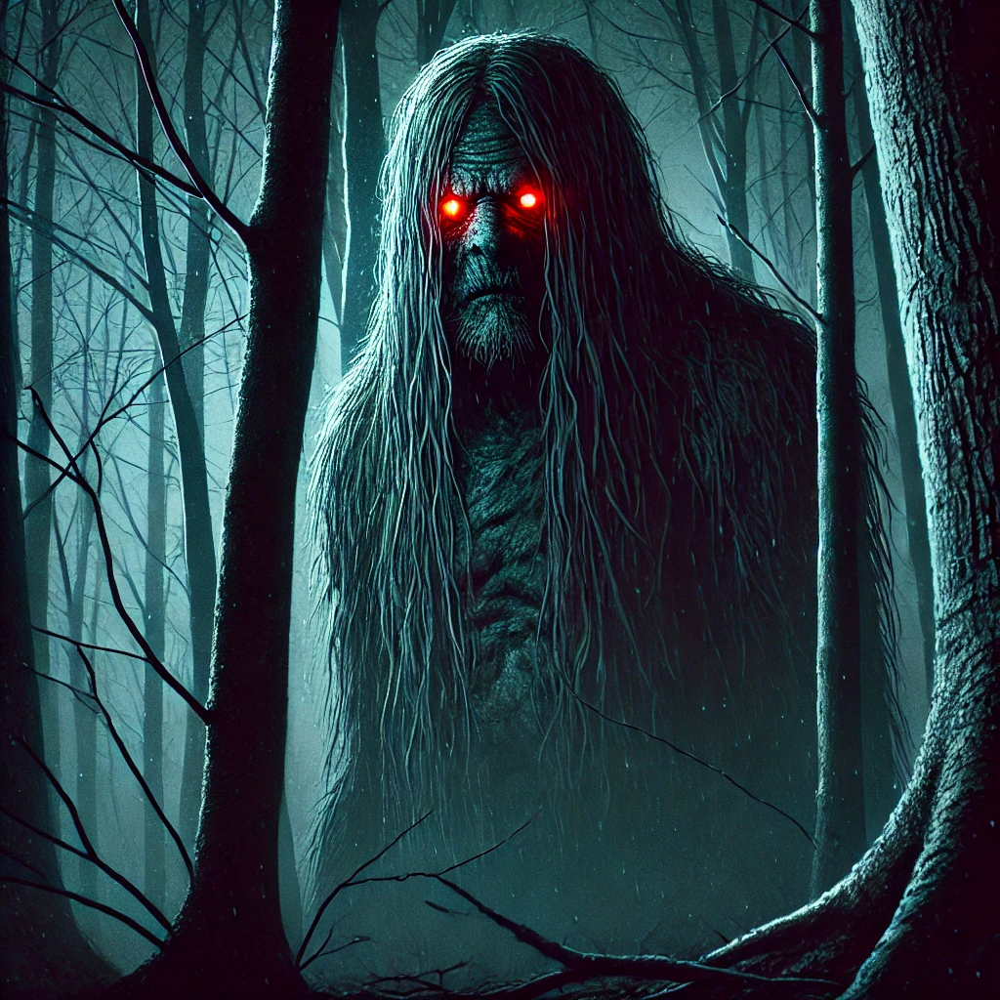

The Tennessee Wildman is a creature of legend, often spotted deep in the Appalachian woods. Known for its piercing eyes and large, looming figure, few have lived to tell the tale of their encounter.
To uncover the truth, you must follow the code.